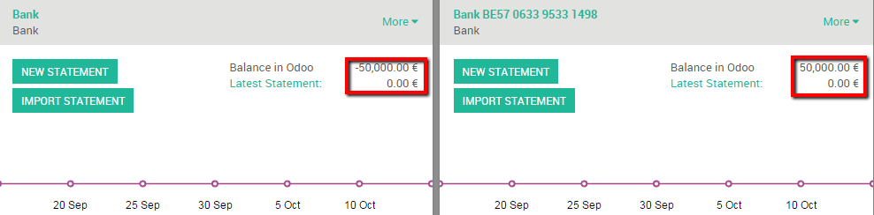
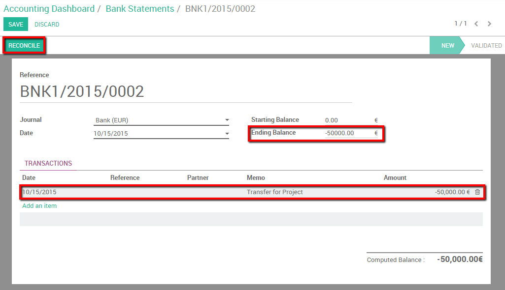
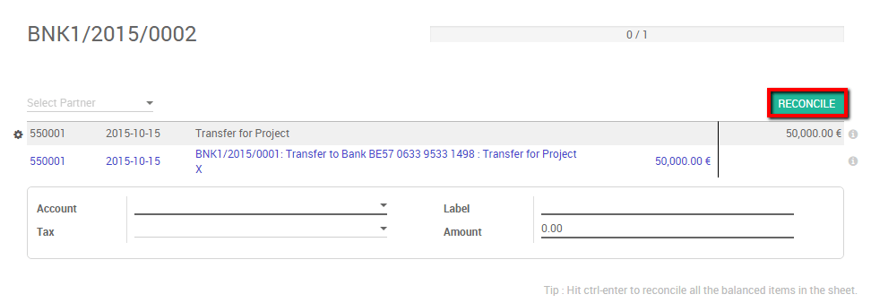
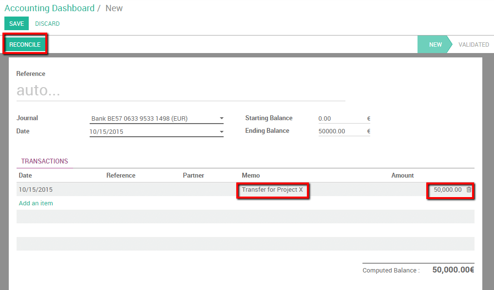

A company might have several bank accounts or cash registers. Within odoo it is possible to handle internal transfers of money with only a couple of clicks.
We will take the following example to illustrate. My company has two bank accounts and I want to transfer 50.000 euros from one of our bank accounts to the another one.
Configuration
Check your Chart of Accounts and default transfer account
To handle internal transfers you need a transfer account in your charts of account. Odoo will generate an account automatically based on the country of your chart of account. To parameter your chart of account and check the default transfer account go into your the accounting module, select .
Your chart of accounts will be pre-installed depending on the country specified during your registration, it cannot be changed.

The default transfer account will automatically be generated as well depending on your country's legislation. If necessary it can be modified from the same page.

Create a second bank account / Journal
Before we can register an internal transfer we need to add a new bank to our accounting dashboard. To do so enter the accounting module, click on . Create a new bank account. You should fill in the Account Number. You can also create and edit your bank to specify your bank’s details.

By saving the changes you now have 2 bank accounts.

Register an internal transfer from one bank to another.
We will now transfer 50.000 euros from our Bank to our Bank BE57 0633 9533 1498 account.
Log an internal transfer
The first step is to register the internal paiement. To do so, go into your accounting dashboard. click on the more button of one of your banks and select .

Create a new payment. The payment type will automatically be set to internal transfer. Select the Bank you want to transfer to, specify the Amount and add a Memo if you wish.
Note
The memo is important if you wish to automatically reconcile (see last chapter).
Save and confirm the changes to register the payment.
In terms of accounting the money is now booked in the transfer account. We’ll need to import bank statements to book the money in the final accounts.
Import bank statements and reconcile
Note that the bank balance computed by Odoo is different that the last statement of your bank.
That is because we did not import the bank statement confirming the departure and arrival of the money. It’s thus necessary to import your bank statement and reconcile the payment with the correct bank statement line. Once you receive your bank statements click the new statement button of the corresponding bank to import them.

Fill in your Transactions line. Ones done, Odoo will display a Computed Balance. that computed balance is the theorical end balance of your bank account. If it's corresponding to the bank statement, it means that no errors were made. Fill in the Ending balance and click on the Reconcile button.
The following window will open:
You need to choose counterparts for the paiement. Select the correct bank statement line corresponding to the paiement and click on the reconcile button. Close the statement to finish the transaction

The same steps will need to be repeated once you receive your second bank statement. Note that if you specify the correct amount, and the same memo in both bank statement and payment transaction the reconciliation will happen automatically.
